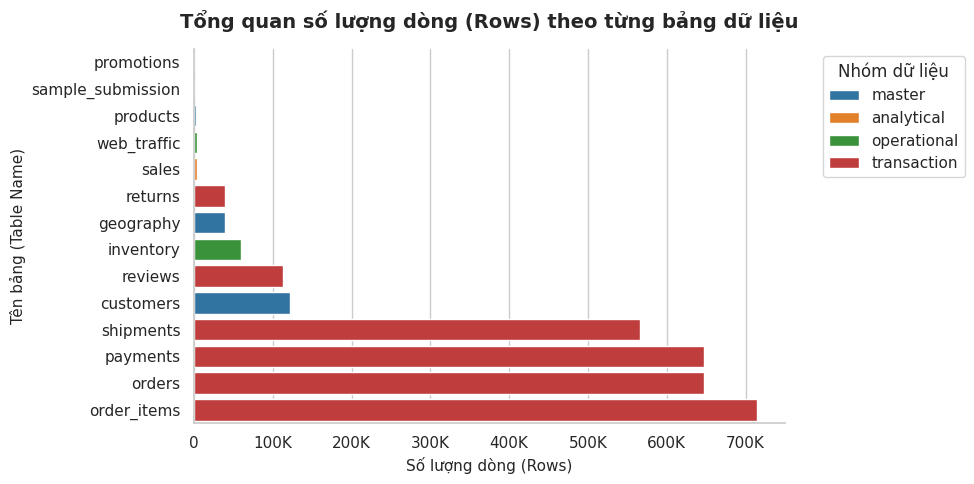
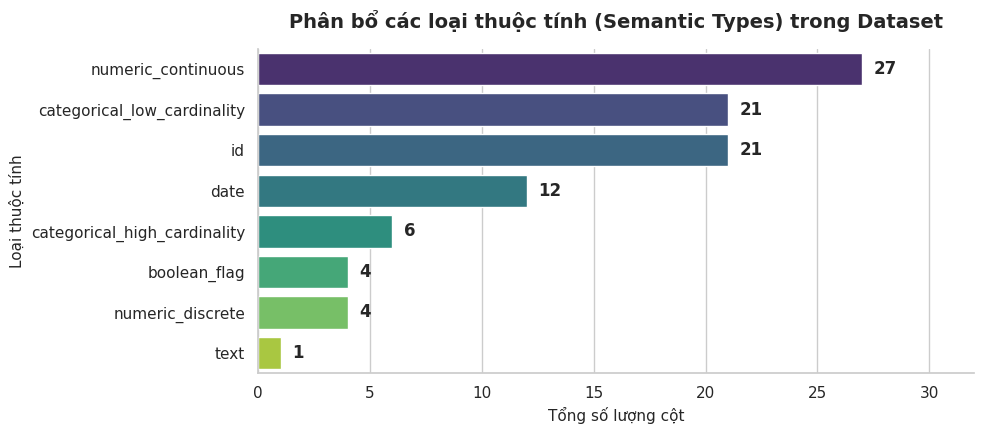
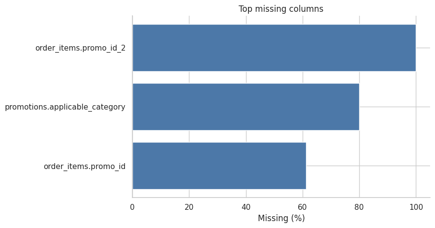
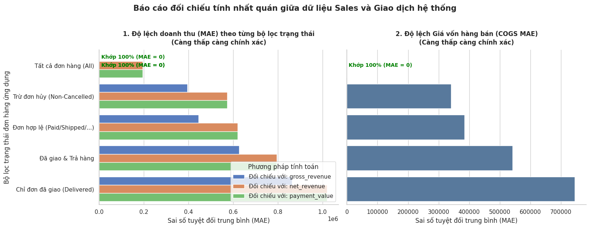
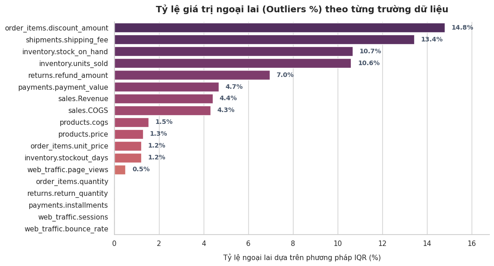
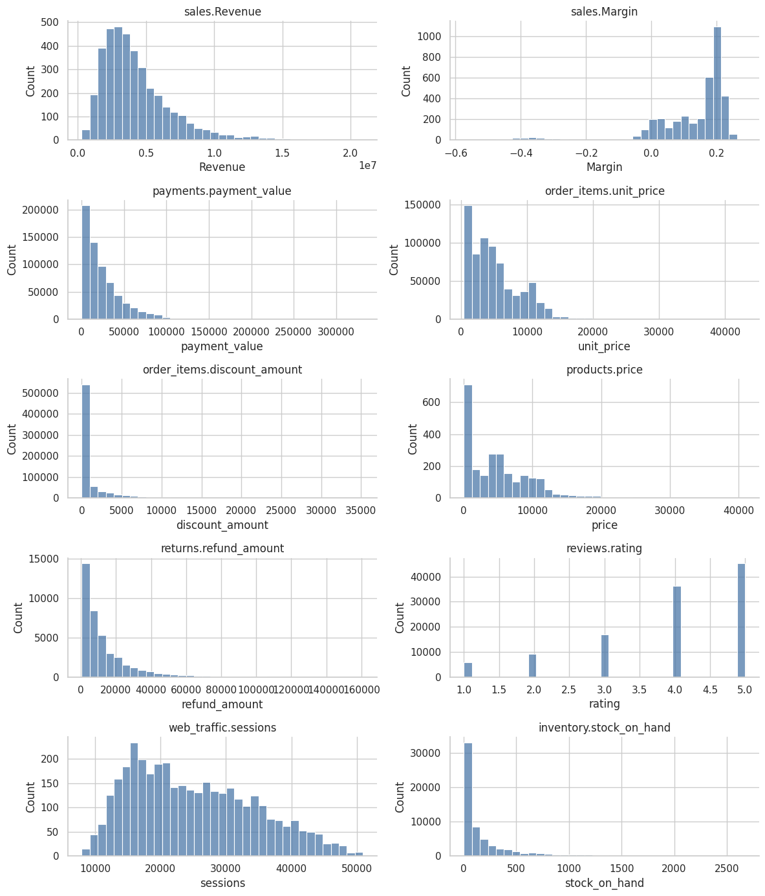
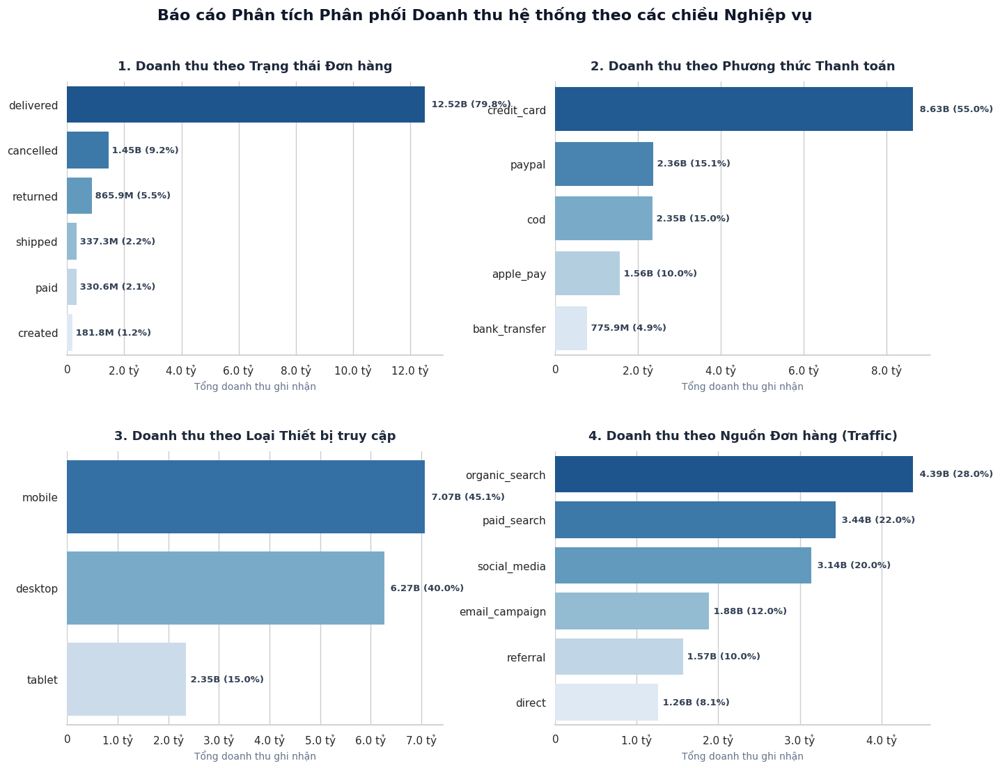
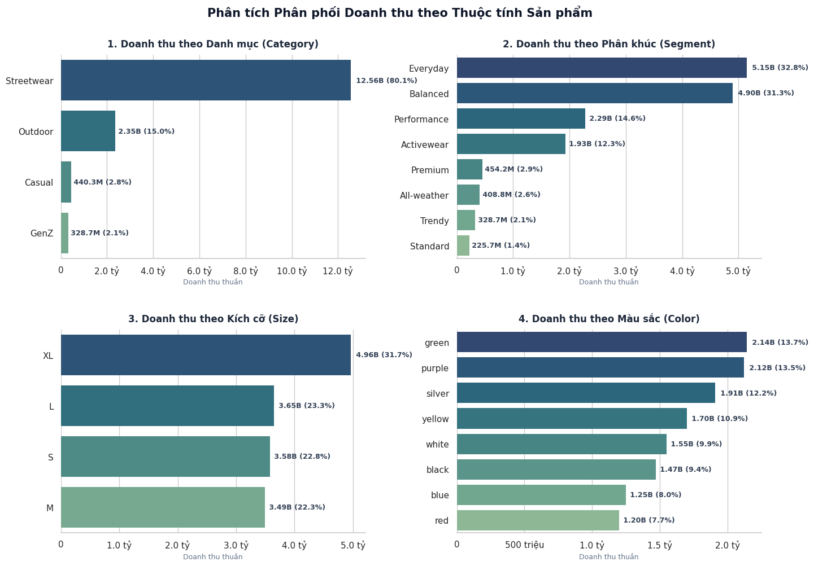
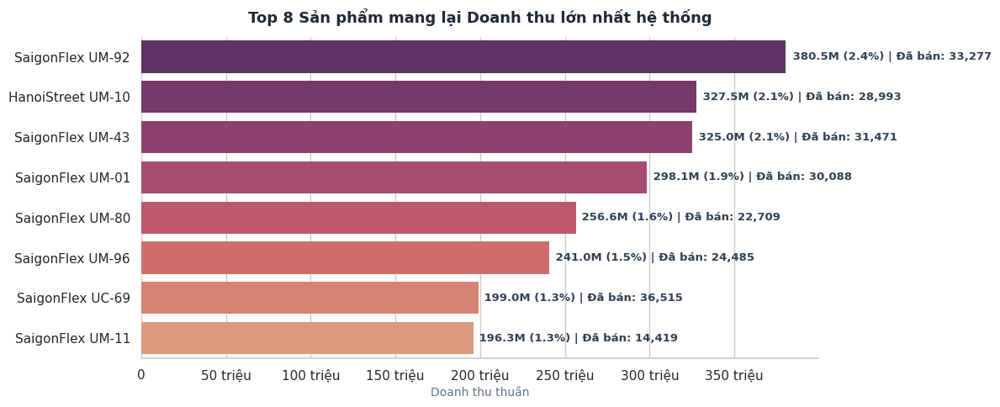

EDA Readiness Report
Tóm tắt những phần đã hoàn thành trong exploratory data analysis, tập trung vào chất lượng dữ liệu, phân phối và revenue dimensions.
Dataset có cấu trúc đủ rõ để tiếp tục EDA
Bước đầu tiên là biết bảng nào là master, transaction, analytical và operational.
- sales.csv là bảng target chính cho Revenue/COGS theo ngày.
- orders là cấp đơn hàng, còn order_items là cấp dòng sản phẩm.
- Không join tất cả bảng cùng lúc nếu chưa aggregate đúng grain.

Phân loại cột trước khi kiểm tra chất lượng
Mỗi cột cần cách kiểm tra khác nhau: ID, numeric, categorical, date, boolean hoặc text.
- Numeric cần range, percentile và outlier.
- Categorical cần domain và value counts.
- Date cần parse, min/max và logic thứ tự thời gian.

Không phải missing nào cũng là lỗi
Missing được diễn giải theo nghiệp vụ trước khi quyết định xử lý.
- promo_id missing thường nghĩa là đơn không dùng khuyến mãi.
- Missing ở key hoặc target mới là nhóm cần điều tra kỹ.
- Decision: keep as is, flag only hoặc investigate later.

Đối chiếu target với transaction data
Trước forecast, cần biết sales.csv khớp với công thức transaction nào.
- So sánh Revenue với gross, net và payment value.
- So sánh COGS với calculated COGS từ product cost.
- Dùng MAE để đọc mức lệch theo status filter.

Outlier được flag, chưa loại bỏ
Outlier là tín hiệu cần kiểm tra, không mặc định là lỗi dữ liệu.
- Dùng IQR cho numeric fields quan trọng.
- Phân biệt rule violation với extreme value.
- Decision phù hợp: flag only hoặc investigate later.

Phân phối numeric giúp đọc đúng dữ liệu
Revenue và các biến tài chính thường lệch, nên không chỉ nhìn mean.
- Đọc cùng median, percentile và skew.
- Nhìn nhanh biến nào có đuôi dài.
- Chuẩn bị cho feature engineering và modeling.

Doanh thu theo order và channel
Phân tích revenue theo các chiều order giúp hiểu nguồn đóng góp chính.
- order_status cho biết trạng thái nào tạo revenue.
- payment_method, device_type, order_source cho góc nhìn channel.
- Đây là phần dễ chuyển thành business insight.

Doanh thu theo thuộc tính sản phẩm
Product mix cho biết nhóm sản phẩm nào đang kéo doanh thu.
- Category và segment giúp đọc cơ cấu danh mục.
- Size/color giúp hiểu mix ở cấp thuộc tính.
- Phần này tạo nền cho insight và feature theo product mix.

Top product view cho thấy mức độ tập trung
Góc nhìn top product giúp xác định sản phẩm/nhóm sản phẩm đáng phân tích sâu hơn.
- Hữu ích cho business insight.
- Hữu ích cho feature engineering theo product/category share.
- Cần kết hợp margin ở bước sau để tránh chỉ tối ưu revenue.

1. Dữ liệu dùng tiếp được
Cấu trúc bảng rõ, có target daily sales, có transaction và operational data để kiểm tra chéo.
2. Rủi ro lớn là join sai grain
Đặc biệt là orders và order_items. Cần aggregate đúng cấp trước khi phân tích.
3. Missing cần hiểu nghiệp vụ
Promotion missing là hợp lý, không nên coi mọi missing là lỗi cần fill/drop.
4. Chuẩn bị cho modeling
Returns, reviews và final status có thể gây leakage; chỉ dùng lagged/known features.